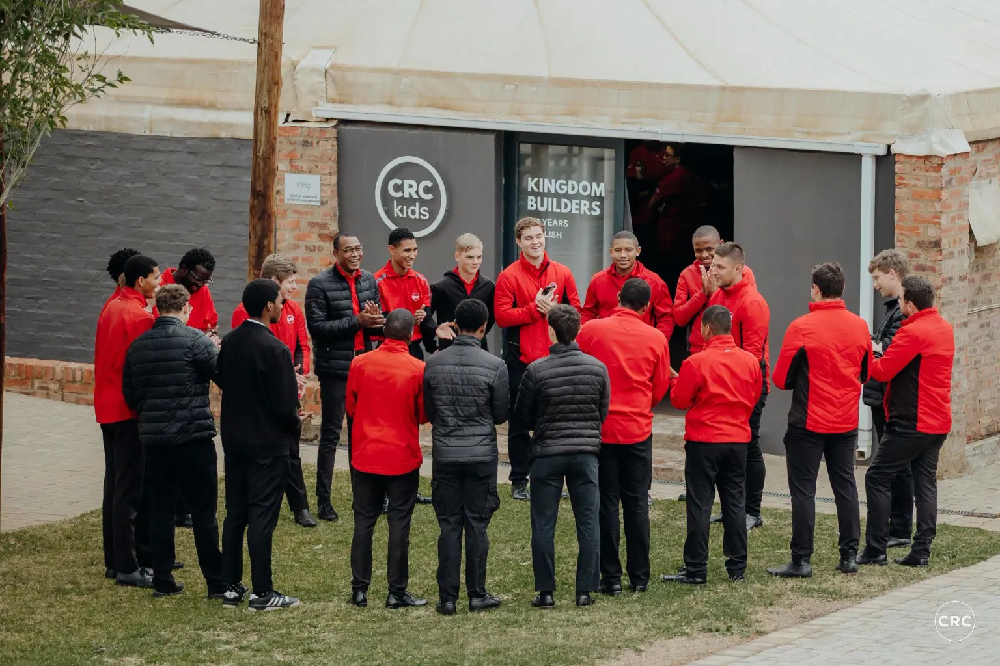

Welcome back.
Sign in to your ministry account.
ONE TEAM. ONE PURPOSE.
One ministry. Many churches. A simpler way to prepare, serve and grow together.
Explore the ministry platform ↓
THE HEART OF OUR MINISTRY
Where do we serve?CRC!
Who do we serve?Jesus!
BUILT FOR THE WAY YOUR CHURCH SERVES
A shared ministry platform, configured for each local CRC. Keep your own teams, service times, leadership and serving areas.
Respond to Sunday availability and grow through your local Academy.
See who needs attention, organise Sunday and record attendance without unnecessary steps.
Configure your local services, teams, roles and optional tools. Each church keeps its records separate.
YOUR NEXT SUNDAY STARTS HERE
Sign in to your ministry account.
CRC POTCHEFSTROOM / MEMBER HQ
YOUR SUNDAY
We serve for His glory.